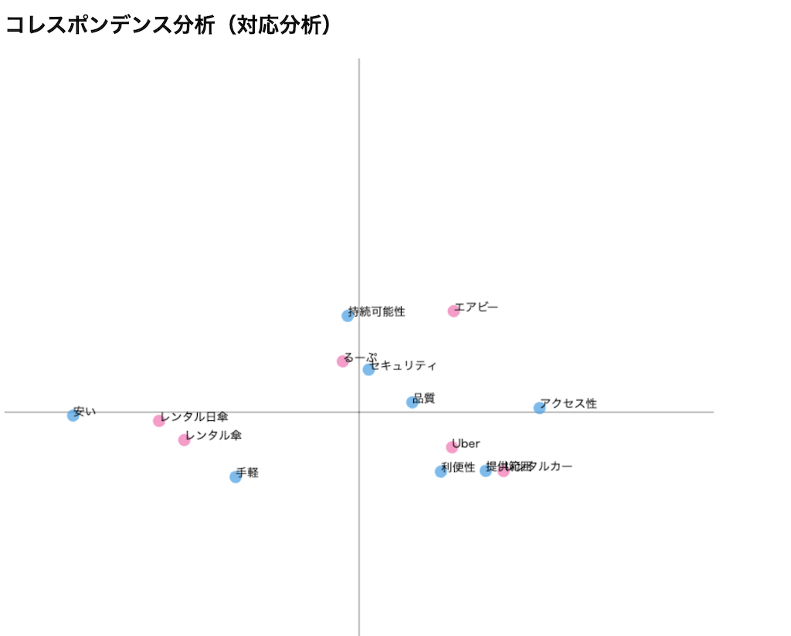

Project Note
概要
私たちの班では、新しいシェアリングサービスについて考えました。
【 日傘のシェアリングサービス 】

日傘を持ち歩くのはめんどくさいけど、日焼けは絶対にしたくない！！
そんな悩みを叶えるために日傘のシェアリングサービスがあればいいと考えました。
駅から大学までの短い距離の中でシェアすることができれば借りるのも返すのも楽で便利だと思います！
プロセスメモ
■ は考えないといけないこと
● は具体的にやること
→ はやったこと
✔︎インタビュー
日時：2023年5月29日 3・4限
場所：MMC
対象：神大生
質問内容：
1.最近不便だと感じたこと
→電車内が暑い・臭い、日傘持ち歩くのがめんどくさい
2.最近やらかしたこと
→急に雨が降ってきて濡れた、日焼けした、定期忘れた、課題出し忘れた
3.最近の悩み
→紫外線が強くなり始めた、痩せれない、偏頭痛、起きれない
✔日傘につけるQRコードの制作
■QRをシールにするのか、キーホルダーにするのか
●アクリルのキーホルダーを作る！可愛いデザインにする
→透明のアクリル素材をカッティングした
→カッティングしたアクリルを染色した
■アクリルにどのようにQRを印刷するか
→UVプリンターでQRコードを印刷する
✔︎看板の制作
◼︎デザインをどうするか
●イラストレーターでサイズとデザインを作成する
●専用ホームページのQRコードを印刷する
→MDF素材で看板を作成した
✔︎ホームページの作成
◼︎どのようなホームページにするか、テンプレートを探す
◼︎ホームページの内容、何を書くか
●料金設定やコンセプト、設置場所について考えた
→ホームページのテンプレートを書き換えた
→写真を挿入した
→完成したホームページはコチラ
✔︎コレスポンデンス分析

＜分析結果＞
レンタル日傘は、安いや手軽という項目が近くにあることから手の出しやすいシェリングサービスであることがわかりました。セキュリティ面では、設置場所が無人のため緩くなりやすく、提供範囲はレンタルカーやUberEatsと比べ、ターゲットが女性のため狭くなっていることがわかります。
✔︎使用したもの
・UVプリンター
・レーザーカッター
・アクリル
・MDF
・ホームページテンプレートサイト
・日傘
・麻紐
✔︎紹介動画
動画はコチラ